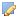
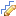
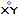

Neue Objekte erstellen
Mit Hilfe der Funktionen innerhalb dieses Reiters, können manuell neue Objekte im Vektorformat erstellt werden.
Basisdatentypen sind Punkt, Linie und Fläche. Jedes neu erstellte Objekt wird von einer Liste geordneter x,y-Koordinaten, sowie entsprechenden Attributen repräsentiert.
Bevor ein neues Objekt gezeichnet werden kann, muß der entsprechende Ziel-Ebene in der Ebenenansicht selektiert (klick mit der LM-Taste) und editierbar (klick mit der RM-Taste und aus dem Kontextmenü 'editierbar' auswählen) geschaltet werden. |
Polygone neu erstellenEin Polygon stellt eine Fläche dar, welche von einer geschlossenen Linie umgrenzt wird. Polygone können nur in einem Ebene gezeichnet werden, welcher die entsprechende Geometrie unterstützt bzw. enthält. Um folgende Polygontypen zeichnen zu können, muß vor dem Zeichnen der entsprechende Button aktiviert werden (klick LM-Taste): |
|
 Rechteck: Der Akteur bewegt den Mauszeiger zu der Stelle in der Kartenansicht, an welcher er das Rechteck zeichnen will. Der Zeichenvorgang beginnt, sobald die LM-Taste gedrückt wird und endet sobald diese wieder losgelassen wird. Sobald die LM-Taste gedrückt wird erscheint ein neues Fenster, welches die Eigenschaften des neuen Objektes angezeigt und die Möglichkeit zur Speicherung bzw. Verwerfung des neuen Objektes bietet. |
|
Rechteck mit definierter Kantenlänge: Nach dem Aktivieren der Funktion (Klick auf Button) wird der Mittelpunkt des zu zeichnenden Rechtecks durch Klicken mit der linken Maustaste in die Karte festgelegt. Im sich anschließend öffnenden Dialogfenster, können die Kantenlängen in Karteneinheiten angegeben werden. |
|
Kreis: Der Akteur bewegt den Mauszeiger zu der Stelle in der Kartenansicht, an welcher sich der Mittelpunkt des Kreises befinden soll. Der Zeichenvorgang beginnt, sobald die LM-Taste gedrückt wird und endet sobald diese wieder losgelassen wird. Sobald die LM-Taste gedrückt wird erscheint ein neues Fenster, welches die Eigenschaften des neuen Objektes angezeigt und die Möglichkeit zur Speicherung bzw. Verwerfung des neuen Objektes bietet. |
|
Kreis/Elipse mit definiertem Radius: Nach dem Aktivieren der Funktion (Klick auf Button) wird der Mittelpunkt des zu zeichnenden Kreises durch Klicken mit der linken Maustaste in die Karte festgelegt. Im sich anschließend öffnenden Dialogfenster, kann der Radius angegeben werden. |
|
Polygon: Der Akteur bewegt den Mauszeiger zu der Stelle in der Kartenansicht, an welcher er den Zeichenvorgang beginnen will. Der Zeichenvorgang beginnt, sobald das erste Mal in die Karte geklickt (LM-Taste) wurde, nach dem zweiten Klick erscheint das Polygon in der jeweils aktuellen Form und kann durch jeden weiteren Klick sukzessive erweitert werden. Der Zeichenvorgang wird durch einen Doppelklick (LM-Taste) beendet. Sobald die LM-Taste das erste Mal gedrückt wurde, erscheint ein neues Fenster, welches die Eigenschaften des neuen Objektes angezeigt und die Möglichkeit zur Speicherung bzw. Verwerfung des neuen Objektes bietet. |
|
Loch in Polygon zeichnen:
Zu Beginn muß das entsprechendes Zielpolygon seleketiert werden:
Mit der Maus auf den Button 'Objekt selektieren' klicken und dann in der Kartenansicht ein Objekt auswählen.
Im Anschluß daran wird der Button 'Loch in Polygon zeichen' aktiviert und das entsprechende Loch innerhalb des Polygons gezeichnet (siehe Polygon zeichen).
Dabei sind folgende Regeln zu beachten:
|
Linien neu erstellenEine Linie beginnt und endet mit einem Knoten und kann zwischen diesen Knoten keinen bis beliebig viele Stützpunkte enthalten. Linien können nur in einem Layer gezeichnet werden, welcher die entsprechende Geometrie unterstützt bzw. enthält. |
|
 Linie Zeichen:
nach der Aktivierung des Buttons beginnt der Zeichenprozess, sobald mit der LM-Taste an der gewünschten Stelle in die Karte geklickt wurde.
Durch jeden weiteren Klick wird ein neuer Stützpunkt gesetzt. Der Zeichenprozess endet mit einem Doppelklick der LM-Taste.
Nach dem ersten Klick in die Karte öffnet sich ein neues Fenster, in welchem die Eigenschaften des neuen Objektes angezeigt und die Möglichkeit zur
Speicherung bzw. Verwerfung des neuen Objektes geboten werden. Folgende Regeln sind zu beachten:
|
|
Paralellen erzeugen: nach dem Selektieren der entsprechenden Linie/Linien kann die Funktion (klick mit der linken Maustaste auf den Button) Aktiviert werden. Im sich neu öffnenden Dialogfenster können folgende Angaben gemacht werden:
|
Punkte neu erstellenEin Punkt wird durch genau ein x,y-Koordinatenpaar definiert. Punkte können nur in einer Ebene gezeichnet werden, welche die entsprechende Geometrie unterstützt bzw. enthält. |
|
Punkt Zeichen: durch einmaliges Klicken mit der LM-Taste auf die gewünschte Stelle in die Kartenansicht. Gleichzeitig öffnet sich ein neues Fenster, in welchem die Eigenschaften des neuen Objektes angezeigt und die Möglichkeit zur Speicherung bzw. Verwerfung des neuen Objektes geboten werden. |
|
 Punkt durch Koordinateneingabe: nach dem Aktivieren der Funktion (Klick mit linker Maustaste), öffnet sich ein neues Dialogfenster in welchem das gewünschte Koordinatenpaar eingegeben werden kann. |